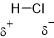
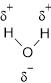
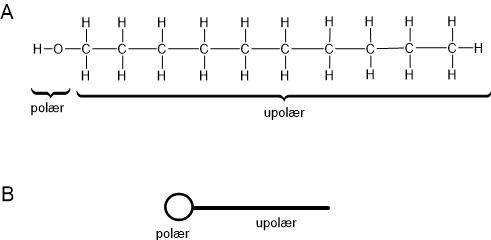
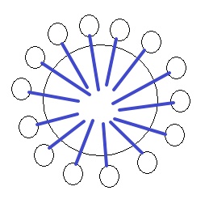

Formålet med dette kapitel er:
Molekyler er sammensat af ikkemetal og ikkemetal. Atomerne i molekylet laver en slags deling af elektroner og opnår derved ædelgasstruktur (dvs. 8 elektroner i yderste skal). Atomerne er bundet sammen med elektronparbindinger. En elektronparbinding består af to elektroner (et elektronpar). Molekyler tegnes ofte med strukturformler, hvor hvert elektronpar vises med en streg. Strukturformler kaldes også for stregformler.
I molekylet HCl er H og Cl bundet sammen med en elektronparbinding der består af to fælles elektroner. (Rent HCl er en gas. Denne gas kan opløses i vand. En sådan opløsning af HCl i vand, er hvad vi kalder saltsyre). H og Cl deles altså om to elektroner. Imidlertid deles de ikke lige meget. Cl er nemlig bedre til at trække i de fælles elektroner end H er. Det betyder, at de fælles elektroner befinder sig lidt tættere på Cl-atomet end på H-atomet. Da elektronerne er negative betyder det, at Cl-atomet bliver svagt negativt. Tilsvarende bliver H-atomet svagt positivt.
Der er ikke tale om, at elektroner helt overgives fra H til Cl som det sker i ionforbindelser. Det er kun delvist at elektroner "overføres". Den lille ekstra negative ladning Cl får, kan vi i strukturformlen angive ved at skrive δ- ved Cl, se figur 6.1. δ er det græske bogstav delta, og vi udtaler δ- som delta-minus.

Nogle atomer er altså bedre end andre til at trække i fælles elektroner i en elektronparbinding. Elektronegativitet (EN) er et mål for denne tiltrækningsevne. EN er et tal mellem 0 og 4. Des større elektronegativiteten er for et atom, des bedre trækker atomet i fælles elektroner i en elektronparbinding. EN for chlor er 3,0 og for hydrogen er den 2,1. Vi kan altså ud fra disse elektronegativiteter forudsige, at chlor trækker bedst i de fælles elektroner mellem chlor og hydrogen og derfor bliver lidt negativ (idet den trækker i elektroner, der er negative).
Elektronegativiteten for en række atomer er vist i tabellen. Bemærk at ædelgasserne (hovedgruppe 8) ikke tilskrives en elektronegativitet, da de ikke indgår i kemiske forbindelser.
| HG 1 | HG 2 | HG 3 | HG 4 | HG 5 | HG 6 | HG 7 | HG 8 |
|---|---|---|---|---|---|---|---|
| H 2,1 | He | ||||||
| Li 1,0 | Be 1,5 | B 2,0 | C 2,5 | N 3,0 | O 3,5 | F 4,0 | Ne |
| Na 0,9 | Mg 1,2 | Al 1,5 | Si 1,8 | P 2,1 | S 2,5 | Cl 3,0 | Ar |
| K 0,8 | Ca 1,3 | Ge 1,6 | Ga 2,0 | As 2,2 | Se 2,6 | Br 3,0 | Kr |
| Rb 0,8 | Sr 1,0 | In 1,7 | Sn 1,8 | Sb 1,9 | Te 2,1 | I 2,5 | Xe |
Et molekyle hvor der er forskel i atomernes elektronegativitet siger vi er polært. Det skyldes at molekylet får to poler - en positiv og en negativ. Vi kan også sige at molekylet er en dipol. I praksis skal forskellen mellem elektronegativiteterne for de to atomer være større end 0,5 for at molekylet er polært.
Eksempel 1: Er HF et polært molekyle? EN for H er 2,1 og for F er den 4,0. Da forskellen er større end 0,5 (nemlig 1,9), er molekylet polært med en negativ ende ved F og en positiv ende ved H.
Eksempel 2: Er H2S et polært molekyle? EN for H er 2,1 og for S er den 2,5. Da forskellen er mindre end 0,5 (nemlig 0,4), er molekylet ikke polært.
Vandmolekylet (med formlen H2O) ser ud som på figur 6.2. Af grunde som vi ikke her skal komme ind på, er vandmolekylet formet som et V (altså ikke lineært, som man måske skulle tro). O har en EN på 3,5 og H på 2,1. Forskellen er på 1,4, altså langt over 0,5. Derfor er vandmolekylet polært. Den negative ende er ved O'et (størst EN) og den positive ende ved H'erne.

Vi kan altså groft dele molekylforbindelser op i to slags: de upolære og de polære. Grunden til at dette er vigtigt, er at det har betydningen for blandbarheden af stoffer.
Der gælder nemlig følgende simple regler:
Vand er, som vi tidligere har set, polært. Ammoniak, NH3, er også polært (forskellen i EN mellem H og N er 0,9). Heptan (C7H16) er upolært (forskellen i EN mellem H og C er kun 0,4, altså mindre end 0,5). Vi kan derfor forudsige følgende:
Vi har indtil nu delt de kemiske forbindelser op i ionforbindelser (metal + ikkemetal) og molekylforbindelser (ikkemetal + ikkemetal). Vi skal nu se at vi kan bløde denne inddeling lidt op.
I ionforbindelser overføres en elektron fra et atom til et andet. Fx i natriumchlorid: natrium afgiver en elektron for at opfylde oktetreglen, chlor optager en elektron; netto er der overført en elektron fra natrium til chlor.
I molekylforbindelser overføres der ikke elektroner, i stedet deles to (eller flere) atomer om elektroner. De delte elektroner danner elektronparbindinger mellem atomerne. I polære molekyler bliver elektronerne imidlertid delvist overført til det atom der har størst elektronegativitet. Polære molekylforbindelser har derfor visse ligheder med ionforbindelser. Eller vi kan opfatte ionforbindelser som ekstremt polære forbindelser, her trækker det ene atom (ikkemetallet) så hårdt i elektronerne at én eller flere elektroner helt overføres.
Da ionforbindelser kan opfattes som ekstremt polære forbindelser, betyder det også at de er lette at opløse i polære stoffer (jf. blanbarhedsreglerne i forrige afsnit). Vand er et polært stof, derfor kan ionforbindelser (salte) generelt opløses i vand. Opløseligheden (det antal gram af stoffet der kan opløses per liter vand) varierer dog meget.
Vi kan lave en glidende skala, hvor vi i den ene ende har upolære molekyl-forbindelser og i den anden ende har ionforbindelser. I midten har vi polære molekylforbindelser.
| Type forbindelse | Ionforbindelse | Polær molekylforbindelse | Upolær molekylforbindelse |
| Forskel i EN | > 1,8 | 0,5-1,8 | < 0,5 |
Hvis man fylder et reagensglas halvt med vand og tilsætter lidt olie, lægger olien sig ovenpå vandet. Vand er polært, olie er upolært, derfor kan de to stoffer ikke blandes. Olien lægger sig øverst, da olie er lettere end vand (per milliliter). Ryster vi reagensglasset kraftigt, ser vi at olien fordeler sig som små dråber i vandfasen. En sådan blanding, hvor en væske er fordelt som små dråber i en anden væske, kalder vi en emulsion.
Emulsionen af olie og vand er imidlertid ustabil, for lader vi den stå, vil olien igen lægge sig ovenpå vandet. En emulsion hvor der er olie i vand kalder vi en olie-vand-emulsion, det skrives ofte O/V-emulsion. Hvis vi i stedet har lidt vand i meget olie vil vanddråber fordele sig i oliefasen (når vi ryster det sammen), dette kalder vi en vand-olie-emulsion (V/O-emulsion).
Som ovenfor beskrevet, er en emulsion af olie og vand ikke stabil. Der er imidlertid mange situationer hvor man ønsker at få vand og olie til at blande sig med hinanden. Et eksempel kunne være margarine. Margarine fremstilles ud fra planteolie, men der er tilsat en stor del vand, typisk omkring 15 %. For at få vand og olie til at hænge sammen, bruger man en emulgator. En emulgator er et stof der er polært i den ene ende og upolært i den anden ende.
På figur 6.3A er vist en strukturformel for stoffet decan-1-ol. Decan-1-ol tilhører en stofklasse man kalder alkoholer, mere om alkoholer i et senere kapitel. For at finde ud af om decan-1-ol er polært, må vi se på elektronegativiteterne. De er som følger, C 2,5; H 2,1; O 3,5. Næsten alle bindinger i decan-1-ol er C-H-bindinger. Forskellen i elektronegativitet mellem C og H er kun 0,4, dvs. disse bindinger er upolære. Decan-1-ol har imidlertid en O-H-binding (vist til venstre på figuren); forskellen i elektronegativitet mellem O og H er 1,4, dvs. denne binding er særdeles polær. Vi kan derfor opfatte decan-1-ol som et todelt molekyle, en del (den største) er upolær, men anden del er polær. Se igen figur 6.3A. Symbolsk kan vi tegne molekylet som det er vist på figur 6.3B. Den lange streg symboliserer den upolære del af molekylet, cirklen symboliserer den polære del.

Hvis vi tilsætter emulgator til en blanding af vand og olie og ryster kraftigt, sker der følgende: Olien fordeler sig som små dråber i vandfasen (vi ser på tilfældet hvor der er mest vand); den upolære del af emulgatormolekylet går i forbindelse med olien (der er upolær), men den polære del af emulgatoren går i forbindelse med vandet (der er polær). Situationen er vist på figur 6.4. Hver oliedråbe bliver omgivet at emulgatormolekyler der via den polære del kan opløses i vand. Resultatet er, at oliedråberne kan holdes opløst i vandet. Vi har nu fået en stabil emulsion, dvs. vand og olie vil ikke igen skilles i to faser.
